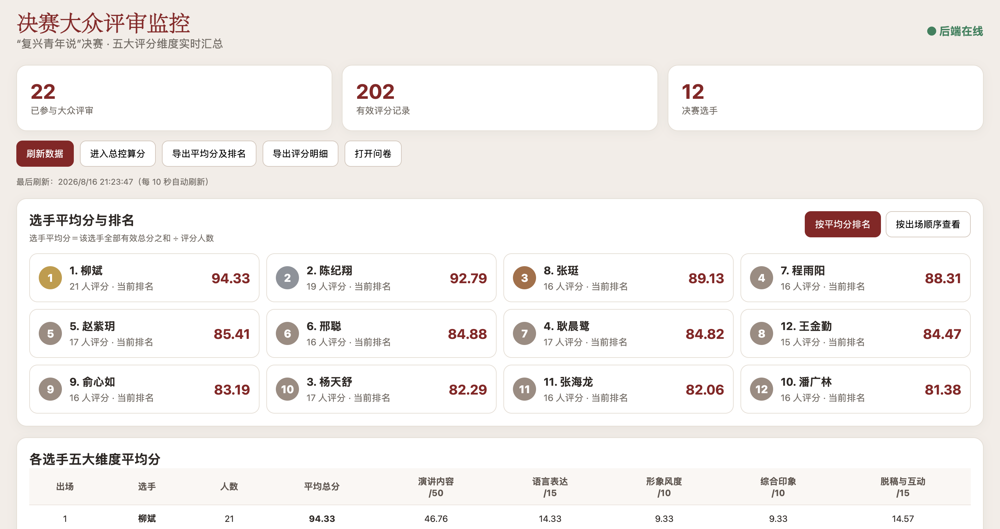
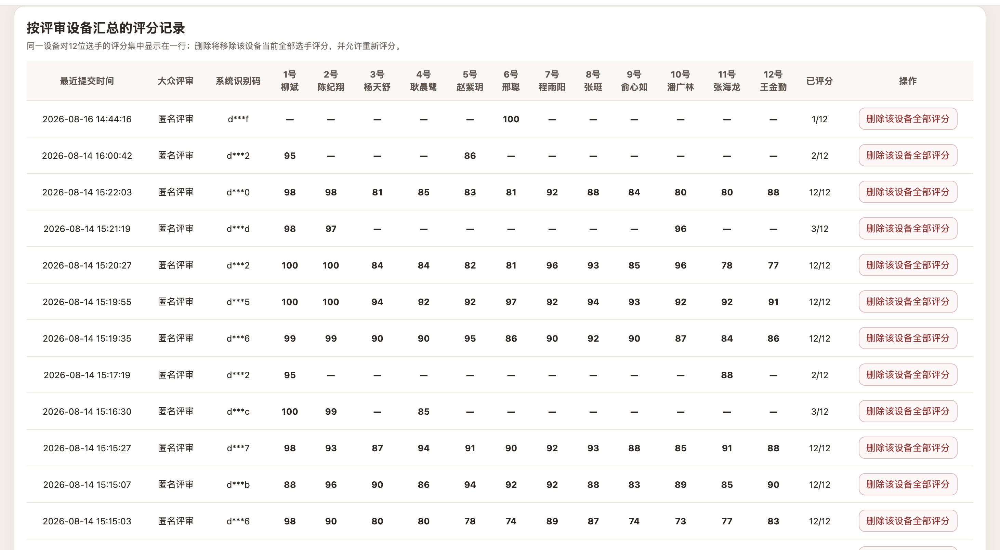
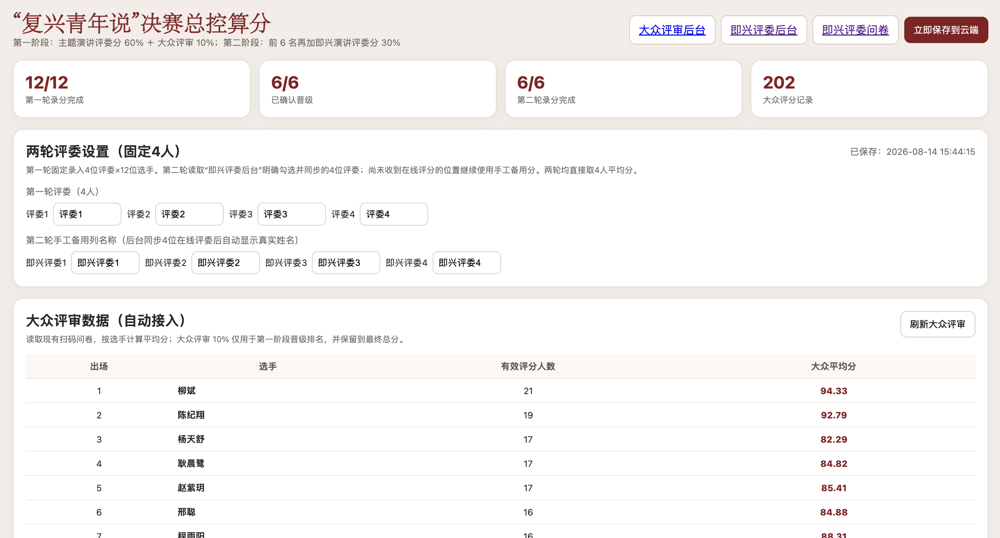

大众评审扫码问卷
匿名设备识别；按选手逐位评分。
/final-vote/score.html“复兴青年说”决赛 · 问卷、后台与总控的固定入口留存
以下地址均在同一 CloudBase 环境下。可从这里直接进入实际页面；数据流转图中相应方块也已设置为相同入口。
匿名设备识别；按选手逐位评分。
/final-vote/score.html查看排行、评分明细与按设备删除记录。
/final-vote/admin.html第一轮、前6确认、第二轮与最终奖项排序。
/final-vote/calculation.html填写评委全名并为已晋级的6位选手评分。
/final-vote/judge.html按评委设备汇总、选中4位正式评委并同步总控。
/final-vote/judge-admin.html查看前端、云函数/数据库及各同步方向和时机。
/final-vote/system-flow.html
展示参与评审数、有效评分记录、12位决赛选手及按平均分计算的实时排名。

同一设备对12位选手的评分在同一行显示；删除时按设备删除其全部评分，排行榜会基于剩余有效记录重新计算。

保存两轮评委设置、接入大众评审平均分、确认前6并计算最终综合成绩和奖项。
这些截图为界面留存，不承载实时数据；点击上方地址才会打开对应的实时页面。